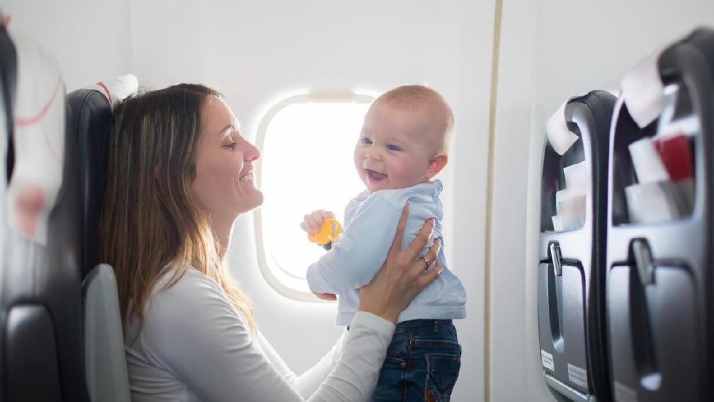

Tak sedikit orang tua mengalami stres saat mengajak balita dalam penerbangan. Karena balita yang sedang aktif tak mau tenang selama dalam perjalanan. Belum lagi timbul kerepotan-kerepotan yang lainnya. Naik pesawat bersama balita diperlukan beberapa persiapan dan kiat tersendiri. Agar acara penerbangan lancar dan menjadi kegiatan yang menyenangkan.
Berikut Tips Naik Pesawat Bersama Anak :
- Jika Ada terbang jarak jauh dengan bayi, mintalah kursi sekat dan siapkan tempat tidur bayi sebelum penerbangan. Bassinet dapat digunakan untuk anak hingga usia 18 bulan, namun paling cocok untuk bayi di bawah delapan bulan.
- Jika Anda sedang hamil lebih dari 24 minggu, pastikan mendapat surat keterangan dari dokter atau bidan yang menyatakan Anda layak terbang.
- Sampailah ke bandara lebih awal sebelum penerbangan. Agar Anda tidak lari tergesa-gesa sambil menyeret banyak koper dan menggendong atau menggandeng anak karena mepet dengan jam penerbagan. Hal ini bisa menjadikan stres dan kelelahan.
- Di dalam pesawat, jangan berharap Anda dapat membaca buku atau novel favorit, jika balita ikut serta. Anggaplah sebagai bonus jika memang Anda mendapat kesempatan tersebut.
- Ingat, di dalam pesawat Anda tidak boleh membawa tempat air atau makanan lebih besar dari ukuran 100 ml. Susu dan makanan bayi diperbolehkan, namun Anda akan diminta untuk mencicipinya.
- Jika membawa bayi, ambil kain gendongan dan kereta ringan – karena Anda tidak akan selalu mendapatkannya kembali saat di pintu pesawat.
- Periksa bagasi dan hand baggage allowances di situs maskapai penerbagan Anda. Mencoba mengepak ulang dengan kepanikan di bandara bukan suatu hal yang menyenangkan.
- Bawa popok lebih banyak, karena perubahan tekanan udara bisa mengakibatkan gangguan pada perut bayi.
- Beri makan bayi Anda saat sudah lepas landas dan mendarat untuk mencegah sakit telinga. Anda bisa memberinya permen anak-anak atau sesuatu yang dapat mereka hisap.
- Bawa beberapa mainan ukuran kecil, seperti kertas mewarnai atau buku bergambar. Bagi balita yang sudah lebih besar biarkan mereka bermain game komputer selama mereka suka.
- Makanan airline masih kurang ramah untuk anak-anak dan harganya juga mahal. Bawa beberapa makanan ringan yang tidak lengket. Dan jangan membawa minuman dalam kemasan karton karena bisa menyemprot ke mana-mana dan tidak bisa ditutup kembali setelah dibuka.
- Jika Anda membawa anak-anak kecil dalam penerbangan panjang, bawakan baju piyama untuk watu malam. Jangan terlalu kawatir tentang jet lag, anak mengalaminya lebih sedikit dibanding orang dewasa.